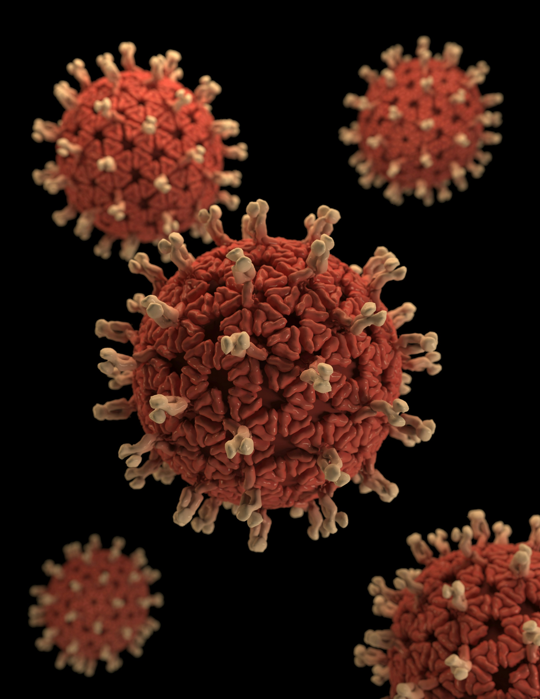

Introduction to Disease Modelling
Date: To be announced
Explore how mathematical models support public health decisions.
View EventsConnecting researchers, public health professionals and institutions to strengthen evidence-based decisions.
Learn About Us Explore Working GroupsInfectious disease modelling is a critical area of research that helps us understand and predict the spread of diseases within populations. It also is important for developing effective public health interventions. This includes developing early warning systems, models and tools.
Models are used to simulate the transmission of infectious diseases and evaluate the impact of different intervention strategies.
Like all models, infectious disease models are simplifications of the real world. While the real world is too complex to perfectly replicate, simplified versions can help us explore a range of public health questions. Infectious disease models can be used to learn more about new outbreaks, understand how best to control them, and make predictions about the future. Modelling can also be used to fill gaps in current data and identify key sources of uncertainty, helping to guide data collection and research.
Some examples of how infectious disease modelling has been used during public health responses are shown in the table below. Many different mathematical and statistical approaches can be used to understand the patterns of infectious disease transmission. Because of the breadth of areas where models can be useful, it is important to select an appropriate modelling method to answer a public health question.
It is important to recognise the strengths and limitations of infectious disease models to understand the role modelling can play in public health decision-making. Modelling is always limited in some capacity by the data available and the simplifications and assumptions used in the model. A model is not a magic box that can make decisions; it is critical to understand and evaluate the methods used in a model, and to consider modelling results alongside other data and insights from public health experts.
Nevertheless, when used carefully, models help us make the most of what data we do have and understand clearly what we can and cannot say about the future.
These are some of the public health questions the network aims to address.
| Public Health Question | How Modelling Can Help |
|---|---|
| How quickly is a new outbreak spreading? | Models can estimate the speed of transmission and the number of cases over time. |
| What interventions are most effective? | Models can simulate different intervention strategies and predict their impact on disease spread. |
| What is the risk of future outbreaks? | Models can assess the likelihood of future outbreaks based on current data and trends. |
MID Network brings together people from across East Africa to learn from one another, develop locally relevant approaches, and apply infectious disease modelling to the public health priorities of our region.

To advance the use of infectious disease modelling in East Africa through collaboration, capacity building, and knowledge sharing.
To be a leading regional network that informs public health decision-making through innovative infectious disease modelling.
If you are interested in joining the MID Network or learning more about our activities, please contact us at info@midnetwork.org.
Using data to understand disease patterns and emerging threats.
Exploring disease transmission and intervention strategies.
Supporting training, mentorship and collaboration.
Date: To be announced
Explore how mathematical models support public health decisions.
View EventsExplore resources supporting infectious disease modelling and public health.
Connect with researchers and public health professionals working on infectious disease modelling.
Get InvolvedSubscribe to our newsletter to stay updated on the latest news and events.
Fill in the form below to subscribe.